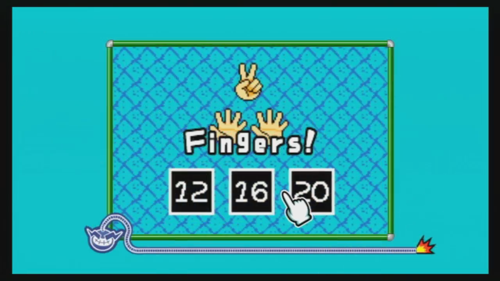
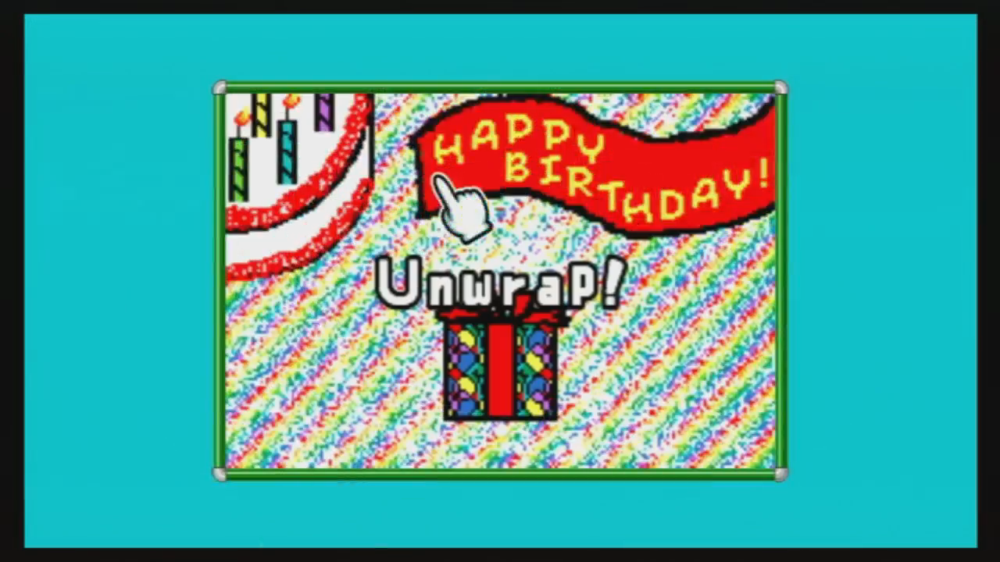
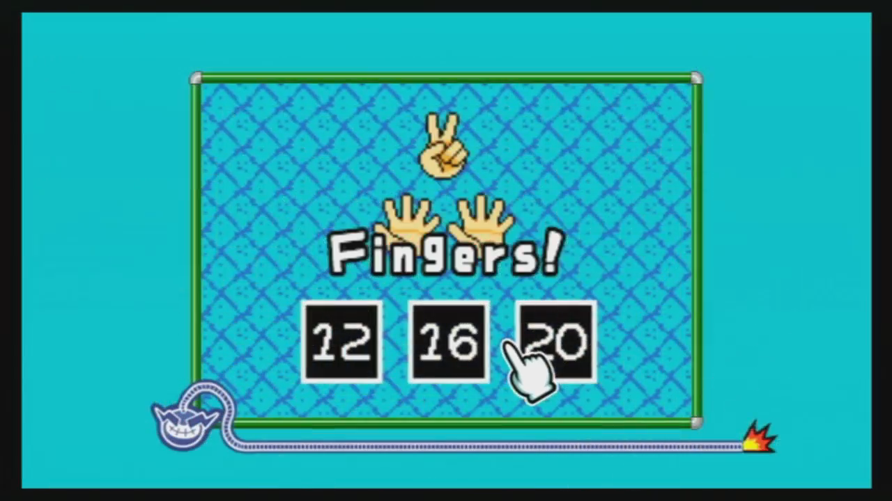
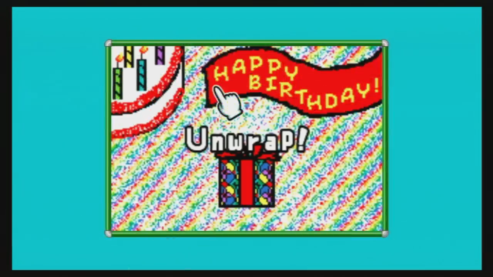

Highlights
Jeff Schubbe
software developer & game designer
Intro
Hello!
I am a programmer, designer, and game developer, working to craft experiences that will leave a positive impact on people while pushing the boundaries of what interactive media has to offer.
Check out my work below.
Projects

Color Totems (2D)
A 2D puzzle game inspired by the 3D version and developed in the PuzzleScript engine.
Legend of Alkior: The Impending Storm
An adventure RPG with a wide variety of gameplay ideas and features.
Supermarket Checkout
A calculator for a store's checkout line that considers special deals and sales.

WarioWare: D.I.Y. Micro Minigames
A collection of short minigames, designed and programmed on the Nintendo DS.
 



WarioWare: D.I.Y. Micro Minigames
This is a collection of minigames, each with a duration of only a few seconds, created with the WarioWare: D.I.Y. editor on the Nintendo DS. Each round the player is given a random game and must respond quickly to the prompt (such as "Sort!") in order to win. The goal is to clear as many games as possible before running out of lives. Gameplay in the video to the left shows the same games transferred over to the Nintendo Wii's companion game WarioWare: D.I.Y. Showcase. Microgames play the same on the Wii as the DS, except the touch screen controls (i.e. tapping with the stylus) are replaced by motion controls (i.e. point-and-click with the Wii Remote).
Great-Great-Grandguy Goes Grasshopping
A puzzle game with a modest scope.

Huffman Compression
An implementation of Huffman codes used to compress an image file.
Huffman Compression
Created With: Microsoft Visual Studio (C++) Download for Windows! An implementation of Huffman codes to compress a PPM image file to an alternate file format, referred to as UDCPS (University of Dayton Computer Science). A provided .jar file from my professor can verify the accuracy of the compression by converting the file back to PPM format. PPM files are viewable with XnView software. Data structures and algorithms used include a binary heap, an unordered map (hash table), and preorder tree traversals.Why games?
What makes games so great
I love games with a passion, and I want them to be the best that they can be, more than just a pastime. These are a few guiding principles that I will be keeping in mind for my future endeavors.
The design space of games is still vastly unexplored.
As such, I will continue to learn from new avenues of knowledge and improve my technical skills in order to drive my own contributions to game design and technology innovation. I will also encourage more people to be excited for and to actively seek out new experiences that attempt to fill this space.
Games are unique experiences that are to be shared with others.
Games provide sights and wonders and exciting moments that are unique every time they are played. These experiences provide a variety of emotions that their participants, whether player or spectator, can amplify through thoughtful discussion, camaraderie, or even fierce competition. Open criticism and deeper exploration of games can improve the medium in terms of quality and variety, so that is something I wish to encourage. Sharing my own games is also something that I find deeply rewarding.
Games are capable of providing redeeming value to the lives of their players.
It is important to remember why we play games and what they give us. Fun is easily one potential reason, but intrigue, wonderment, learning, and personal satisfaction are a few others. I hope to craft experiences myself that people will find both engaging and inspirational, which can perhaps give them a new perspective on their own lives or have them think in some new and interesting way.
Color Totems (2D)
Created With: PuzzleScript (HTML5 engine) Play in your browser! Leave feedback on Newgrounds! A neat puzzle game of mine, inspired by my Unity demo of the same name! Help Golem gather precious stones as he discovers a vast array of colors! Guide Golem, get Shiny! ==Controls== Arrows: Move Z: Undo move R: Restart level "The game starts simple, then goes for a complete mindblow..." -Newgrounds.com user Music attribution.